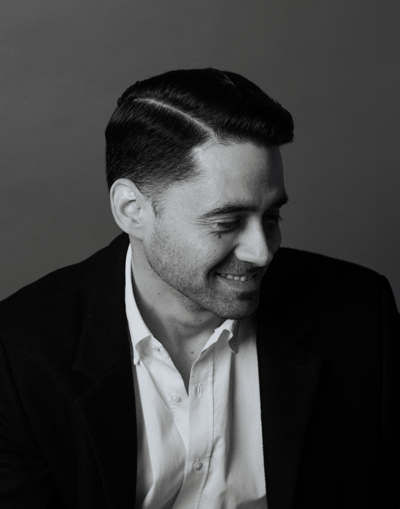

¿Tienes ropa, pero no sabes cómo combinarla o qué piezas te hacen falta?
Este servicio es para ti si quieres armar tu clóset con lo esencial y aprovechar mejor tus prendas. Tendremos una sesión virtual para entender tu estilo, rutina y necesidades. A partir de ahí:
- Te diré qué básicos te hacen falta.
- Crearé 20 outfits 100% personalizados.
- Te compartiré ligas de compra según tu estilo.
- Tú decides qué comprar, cuándo y dónde.
Todo se hace con base en tu tipo de cuerpo, colorimetría y estilo personal.
Incluye una ronda de cambios después de la entrega del lookbook (para sustituir piezas agotadas en tu talla).
Escríbeme por WhatsApp